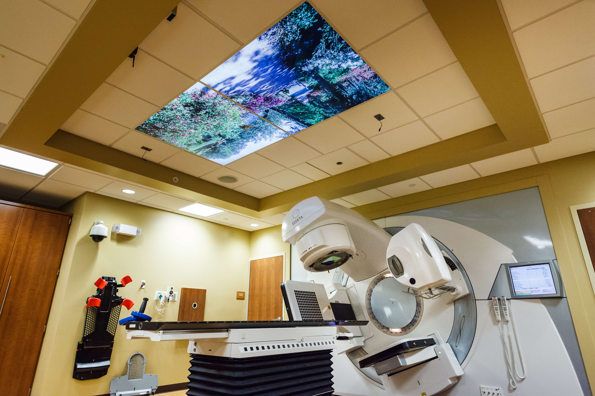

Emergency Department
Our Emergency Department provides immediate medical care 24/7, specializing in pediatric emergencies. We ensure your child receives the best care during critical times. Regular check-ups and specialty clinics are also available to effectively manage your child's health.
Department of Surgery
The Department of Surgery features state-of-the-art facilities, skilled surgeons, and comprehensive care, encompassing a wide range of surgical specialties. Services include:
- Advanced surgical technology
- Pre and post-operative care
Cardiology Department
Specializing in diagnosing and treating heart conditions in children, our Cardiology Department offers services in fetal cardiology and conducts innovative research to advance pediatric cardiology.
Oncology Department
Our Oncology Department offers comprehensive cancer care, including advanced diagnostics, varied treatment modalities, and extensive support services to ensure holistic care.
Pediatrics Department
Our Pediatrics Department provides dedicated care from infancy through adolescence, including routine check-ups, emergency care, and specialty clinics.